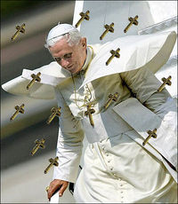

Ángel o demonio
 De: La Frikipedia, la enciclopedia extremadamente seria.
De: La Frikipedia, la enciclopedia extremadamente seria.

|
La información contenida en este artículo es una mínima parte de su jugo total, así que ponte los guantes, saca el tupperwere y empieza a exprimir el tema. Si lo haces serás recompensado con una galleta en almíbar y algo más.
|

|
Este artículo necesita ser ilustrado. Busca una afoto en nuestro depósito de imágenes o donde sea y ponla, pero que no sea pr0n, que se cabrea el señor del adSense y nos corta el grifo de los dólare. Y sin dólare no hay servidor...
|
De la serie Programas de TV:
[[Imagen:{{{imagen_serie}}}|200px|center]]
{{{descripción}}}
| Idioma original:
|
aspañol
|
| Creador:
|
Algún tío de Telecinco
|
| Duración:
|
¿contando los anuncios?
|
| No. Episodios:
|
Muchos
|
| No. Temporadas:
|
2
|
| ¿Aún se transmite?:
|
muerta
|
| Género:
|
Acción, romance, sexo, y e religión
|
| Nivel de frikismo:
|
Megaexcesivo; peligroso para el consumo humano
|
| Películas:
|
Ninguna, pero se suele confundir con Angeles y Demonios (Sale Tom Hanks).
|
La eterna lucha entre el bien y el mal se resume en dos temporadas
Ángel o Demonio es una serie cutre que te cagas producida por Plural Entertainment y emitida por Factoría de Ficción y Siete abusan sexualmente de el-.
A lo que íbamos... es muy cutre. Aun así, es la única serie española que a logrado tocar el tema mas divino de la biblia: la eterna lucha entre el bien y el mal, y mira que es eterna, porque se resume en dos temporadas.
Argumento
Valeria, una puta alumna de instituto, es tentada por una demonia aun mas puta, quien dice que la mejor manera de ir a una fiessssssssta es matar a sus padres a cuchillazos (ya ves). Debido al ligero retraso mental de Valeria, se siente obligada ha hacerlo. A los pocos minutos, recobra la compostura y huye de casa.
Esa noche, unos chulos intentan follarla darle mandanga, cosa que no logran hacer al ser impedida por un asaltacunas ángel llamado Natael. Este le dice que ella también es un ángel y está en el mundo para dar gozo salvación a las almas retrasadas que ceden al mal a cambio de placer demoniaco. Una vez dicho esto, le da una revista porno libro en blanco. También reviven a los padres usando magia negra el poder de Cristo. Desde ese día salva almas de suicidas, putas, borrachos, ludopaticos, borrachuzos, politicos, butaneros, folloneros, frikis etc. Tambien esta encoñada de un tio pijorras y afeminado llamado Damian.
Personajes
Los Ángeles (son los buenos)
- Valeria: es la putilla del instituto. Ve como sus poderes de
ramera ángel acaban de despertar. El origen de sus poderes podria ser las anfetas que tomó su madre durante el embarazo. Está encoñá de Damian, aunque en algunos episodios se droga y cae rendida a los brazos de su asaltacunas mentor Natael.
- Natael: es el
asaltacunas mentor de Valeria. La espía mientras duerme y en la bañera mientras se toca piensa en maneras para que ella no caiga en la tentación del mal. Se infla a tranquilizantes y de pequeño su abuela le estiraba mucho de las orejas, de allí semejante tamaño. Aun está encoñao de la warra sexy demonia Alexia, a la que dejó porque se entretenían mucho tiempo follando en vez de salvar almas.
- Libro: está en blanco, solo da pistas de donde están las almas en peligro cuando le sale de
los webos las páginas. En vez de decir directamente donde están.
- Gabriel: es el arcángel, lo que pasa es que se a cambiado de sexo y se le han doblado los dientes. Tiene una cara de amargada porque hace años que no
folla hace puzzles.
- Asistente Sanitario: salió una vez, en un episodio, mató a un demonio. Carece de protagonismo, así es que pasemos de este tío.
- Chinita y Calvicie: son ángeles que carecen de protagonismo alguno, no hablan mucho y menos la chinita.
Los Demonios (son los malos)
- Iris: es la
ramera demonia que tienta a Valeria para matar a sus padres. Es bisexual y mas guarra que la Trini, que hacia muñecas de mierda y se las comía, de echo se intenta acostar con Valeria y Duna.
- Alexia: es la dueña del burdel, que intenta matar a Valeria por hacerle competencia. Es mas guarra que Iris y Valeria juntas. Es tan guarra que se acostó con el cura (y no es una metafora). Aún le guarda rencor a Natael por calientapoyas.
- Duna: uy¡¡ esta es la más viciosa de todos. Bajo su cándido cuerpo de niña se esconde un corazón oscuro y lujurioso de 600 años que supera incluso a Alexia. Tras escaparse de Los Protegidos, se convierte en socia de la dueña del burdel y logra dominarla.
- Graziel: este es el payaso del grupo, que se rie hasta de su sombra. Le gusta que le pateen, le insulten, le griten y le escupan, demuestra una fijación permanente por la habitación de Alexia. Muchas veces se traviste.
- Damian: es el objeto sexual de la serie, se lo tira todo dios: Valeria, Iris, Alexia, Duna, la profesora... Se convierte en demonio tras quemar a su madre con ácido sulfurico (su propio pis). También sufre retraso mental, tras que el mal haya convertido a su hermana en prostituta y a su padre en asesino, sigue siendo seguidor del mal. Al final engaña a los demonios para irse con Valeria.
- Los perros: hubiera estado chulo que los ángeles hubieran luchado contra los perros, pero a la hora de luchar se convierten en humanos (cutre, cutre y cutre). En ocasiones especiales (Navidad, Semana Santa, Apocalipsis...) la familia de los demonios se unen en la giga-cama de Alexia y hacen una
orgía reunión maligna.
- Valafar: es un demonio que salió en un capitulo y murió en el mismo (patético), lo mató el asistente sanitario con una espada llameante por haberse tirado a la madre de Valeria, a la que embarazó de un babydemon. Y se tiraron toda la puta segunda temporada con el niño dándole patadas a la madre en el útero.
Otros personajes sin importancia
- La mamá de Valeria: es médica y se pasa el día cuidando enfermos mentales y perturbados. Prepara bocatas a los hijos y por la noche da volteretas en el colchón. Hasta que se que embarazada de un demonio. Desde entonces se pasa el día fumando, comiendo carne cruda y haciendo malabares con los cuchillos. En mientras, el Baby Demon le da patadas en el útero, el esposo se lía con la profesora, los hijos se gritan y Graziel se traviste con el fin de llevarla a la cama.
- El papá de Valeria: es un parado que se pasa el día dibujando. Cuando se entera de que la mujer está embarazada se lía con la profesora con la que comparte ratos de
sexo partidas con el monopoli.
- El hermano pequeño: es un niño extraño con complejos y sin personalidad que acaba de descubrir la paja. No sospecha que su hermana sea un ser extraño, aun yendo con ella a una misión de salvamento en la que empuñaba la espada llameante esa.
- El hermano mayor: se fue de casa porque no aguantaba que su madre se tiraba pedos en su cara.
- La profesora: es una alcohólica frenética que practica
sexo monopoly con el padre de Valeria. También se tira a Damian.
- El cura Adrián: es un hombre de Dios que cede al escultural cuerpo de Alexia. Ven mucho la que se avecina, y se fijan mucho en el Recio y Berta. Muchas veces practican el Exorcista.
- Dios: es el jefe de Adrián, Esteban (los quien) y Benedicto XVI. Es omnipresente y omnipotente. Entonces... ¿Podría Dios crear una piedra tan grande que ni el mismo pudiese levantar?
- Joel: (joer, cuantos nombres horteras hay en esta serie) se lo tira Valeria.
Benedicto XVI en Angel o Demonio
 Peneadicto demostrando sus poderes de Demonio
Pues si, Peneadicto (también llamado Ratzinger Z) aparece, y en el bando demoníaco. Solo tenéis que mirar este
articulo
Además de ser el jefe de los demonios es el jefe de la Iglesia y tiene muchos tesoros en el Vaticano. Incluido el anillo de castidad, desaparecido una vez que Alexia y Natael se colaran en el baño de su santidad y lo sacaran de las cañerías disfrazados de fontaneros tipo los hermanos brosh, a los que mataron a base de golpes de remo.
Frikipedia 2005-2016, Licencia
GFDL 1.2 - Extraído por FrikiLeaks